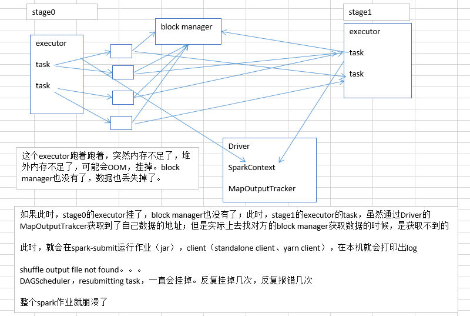
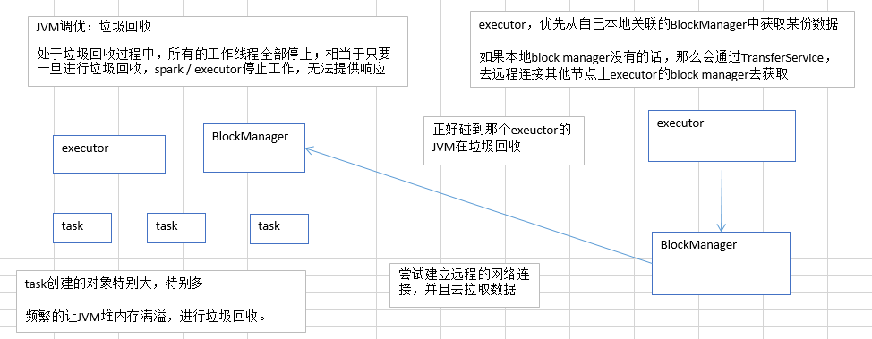

9.JVM调优之调节executor堆外内存与连接等待时长
直接使用
--conf spark.yarn.executor.memoryOverhead=2048 # yarn模式下堆外内存
(2.4版本为：spark.executor.memoryOverhead) # yarn模式下堆外内存
--conf spark.core.connection.ack.wait.timeout=300 # 等待时长，避免对方gc时stop world导致文件丢失
堆外内存和连接等待时长配置
/usr/local/spark/bin/spark-submit \
--class com.ibeifeng.sparkstudy.WordCount \
--num-executors 80 \ # 50-100
--driver-memory 6g \ # 1-5
--executor-memory 6g \ # 6-10 总共一次用掉接近500G内存
--executor-cores 3 \
--master yarn-cluster \
--queue root.default \
--conf spark.yarn.executor.memoryOverhead=2048 \ # yarn模式下堆外内存
--conf spark.core.connection.ack.wait.timeout=300 \ # 等待时长，避免对方gc时stop world导致文件丢失
/usr/local/spark/spark.jar \
${1}
executor堆外内存

有时候，如果你的spark作业处理的数据量特别特别大，几亿数据量；然后spark作业一运行，时不时的报错，shuffle file cannot find，executor、task lost，out of memory（内存溢出）；
可能是说executor的堆外内存不太够用，导致executor在运行的过程中，可能会内存溢出；然后可能导致后续的stage的task在运行的时候，可能要从一些executor中去拉取shuffle map output文件，但是executor可能已经挂掉了，关联的block manager也没有了；所以可能会报shuffle output file not found；resubmitting task；executor lost；spark作业彻底崩溃。
上述情况下，就可以去考虑调节一下executor的堆外内存。也许就可以避免报错；此外，有时，堆外内存调节的比较大的时候，对于性能来说，也会带来一定的提升。
具体配置(一定要在spark-submit脚本中去设置。)
# 不能在代码中设置，要在spark-submit设置
--conf spark.yarn.executor.memoryOverhead=2048
spark-submit脚本里面，去用--conf的方式，去添加配置；一定要注意！！！
切记，不是在你的spark作业代码中，用new SparkConf().set()这种方式去设置，不要这样去设置，是没有用的！
spark.yarn.executor.memoryOverhead（看名字，顾名思义，针对的是基于yarn的提交模式）
默认情况下，这个堆外内存上限大概是300多M；后来我们通常项目中，真正处理大数据的时候，这里都会出现问题，导致spark作业反复崩溃，无法运行；此时就会去调节这个参数，到至少1G（1024M），甚至说2G、4G
通常这个参数调节上去以后，就会避免掉某些JVM OOM的异常问题，同时呢，会让整体spark作业的性能，得到较大的提升。
案例：Spark 运行内存溢出问题：memoryOverhead issue in Spark
连接时长

此时呢，就会没有响应，无法建立网络连接；会卡住；ok，spark默认的网络连接的超时时长，是60s；如果卡住60s都无法建立连接的话，那么就宣告失败了。
碰到一种情况，偶尔，偶尔，偶尔！！！没有规律！！！某某file。一串file id。uuid（dsfsfd-2342vs--sdf--sdfsd）。not found。file lost。
这种情况下，很有可能是有那份数据的executor在jvm gc。所以拉取数据的时候，建立不了连接。然后超过默认60s以后，直接宣告失败。
报错几次，几次都拉取不到数据的话，可能会导致spark作业的崩溃。也可能会导致DAGScheduler，反复提交几次stage。TaskScheduler，反复提交几次task。大大延长我们的spark作业的运行时间。
可以考虑调节连接的超时时长。
--conf spark.core.connection.ack.wait.timeout=300
spark-submit脚本，切记，不是在new SparkConf().set()这种方式来设置的。
spark.core.connection.ack.wait.timeout（spark core，connection，连接，ack，wait timeout，建立不上连接的时候，超时等待时长）
调节这个值比较大以后，通常来说，可以避免部分的偶尔出现的某某文件拉取失败，某某文件lost掉
为什么在这里讲这两个参数呢？
因为比较实用，在真正处理大数据（不是几千万数据量、几百万数据量），几亿，几十亿，几百亿的时候。很容易碰到executor堆外内存，以及gc引起的连接超时的问题。file not found，executor lost，task lost。
调节上面两个参数，还是很有帮助的。